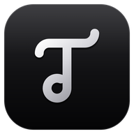

Tunedzy Go0:00
Tap to record. Nothing leaves your phone.
Making it sound like a studio…
What was done
Want to edit, mix and master with many tracks, remove ums or put the sound back into a video? Get Tunedzy for your computer.

Tunedzy GoTap to record. Nothing leaves your phone.
Want to edit, mix and master with many tracks, remove ums or put the sound back into a video? Get Tunedzy for your computer.